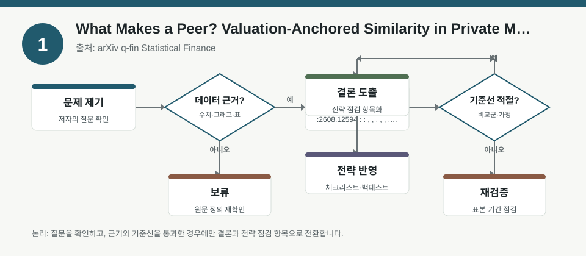
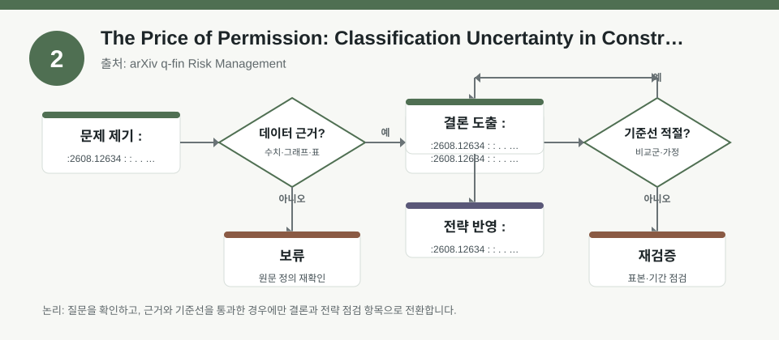
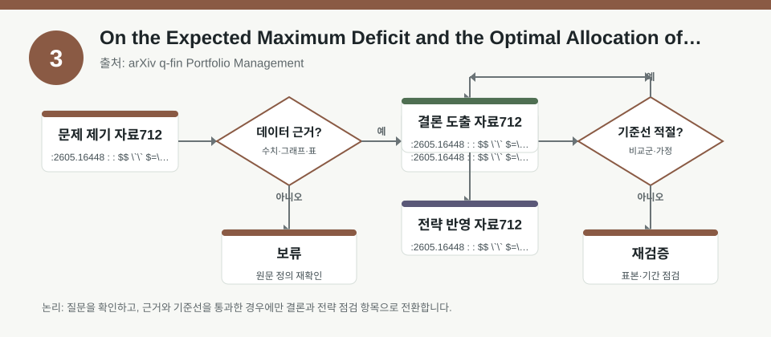

핵심 요약
- 결론: 이번 3개 자료는 공통적으로 “정확한 자산 선택”보다 “비교 기준, 분류 불확실성, 유동성 하방”을 먼저 점검해야 한다는 점을 보여줍니다.
- 원칙: 수치 주장보다 가정과 정의를 먼저 검수하고, 한국 투자자는 KOSPI/KOSDAQ 섹터 노출·환율·금리·변동성·신용 규칙을 체크리스트로 바꿔 해석해야 합니다.
주목할 자료
| 번호 | 자료 | 출처 | 원문 | 핵심 내용 | 데이터 포인트 | 리스크/한계 |
|---|---|---|---|---|---|---|
| 1 | What Makes a Peer? Valuation-Anchored Similarity in Private Markets | arXiv q-fin Statistical Finance | 원문 보기 | 비상장 시장에서 유사 기업을 단순 업종이 아니라 가치평가 앵커로 다시 정의하는 관점을 제시합니다. | 밸류에이션 기준의 피어 매칭, 비교군 선택이 포트폴리오·리스크 해석에 미치는 영향 | 거래 빈도와 공시가 제한적이어서 유사도 기준이 바뀌면 결론도 달라질 수 있어, 실제 샘플 정의를 확인해야 합니다. |
| 2 | The Price of Permission: Classification Uncertainty in Constrained Capital Markets | arXiv q-fin Risk Management | 원문 보기 | 허용/비허용의 이분법이 아니라, 투자 가능 집합이 표준별로 흔들리는 분류 불확실성을 다룹니다. | 분류 안정성, 규칙 변경 민감도, 편입·제외 충격이 위험 예산에 주는 영향 | 샤리아 준수 사례를 일반화할 때 제도 차이를 확인해야 하며, 규칙 정의와 업데이트 주기가 핵심 검수 항목입니다. |
| 3 | On the Expected Maximum Deficit and the Optimal Allocation of Reserves | arXiv q-fin Portfolio Management | 원문 보기 | 유동성 부족의 최대 적자 규모와 확률을 함께 보며 준비금 배분을 최적화하는 프레임을 제시합니다. | 최대 적자, 손실 경로, 꼬리 위험을 반영한 준비금/현금성 자산 배분 관점 | 모형의 손실 경로 가정과 왜곡함수 선택에 따라 결과가 달라지므로, 실제 스트레스 시나리오와 비교 검증이 필요합니다. |
자료별 상세
1. What Makes a Peer? Valuation-Anchored Similarity in Private Markets

- 핵심: 비상장 비교군은 업종 코드보다 밸류에이션의 공통 구조를 기준으로 잡아야 한다는 문제의식을 제시합니다.
- 데이터 포인트: 피어 정의가 바뀌면 멀티플 해석, 상대가치 비교, 포트폴리오 구성의 기준점이 함께 흔들립니다.
- 리스크: 거래가 드물고 공시가 제한적이어서 “유사한 기업”의 기준이 표본마다 달라질 수 있습니다.
- 투자전략 반영 예시: 한국 투자자는 비상장·스몰캡을 볼 때 KOSDAQ 동종업종 비교만 쓰기보다, 현금흐름·성장률·자본구조가 비슷한지 체크리스트로 따로 점검할 수 있습니다.
- 실행 예시: 비교군 선정표에 업종, 성장 단계, 레버리지, 환노출, 유동성 제약 항목을 넣고, 항목별로 일치 여부를 먼저 기록해 두는 방식이 유용합니다.
2. The Price of Permission: Classification Uncertainty in Constrained Capital Markets

- 핵심: 투자 가능 여부가 규칙 하나로 고정되지 않고, 기준이 달라질 때 시장 접근성과 위험이 달라질 수 있음을 강조합니다.
- 데이터 포인트: 편입/제외 분류의 불안정성은 거래 수요, 수급 충격, 리밸런싱 마찰로 이어질 수 있습니다.
- 리스크: 샤리아 규칙을 사례로 쓰므로, 한국 시장의 공모주·테마주·정책 수혜주 분류와는 제도적 차이를 확인해야 합니다.
- 투자전략 반영 예시: 한국 투자자는 KOSPI/KOSDAQ에서 업종 분류가 바뀌거나 규제 이슈가 생길 때, 해당 종목의 수급 공백과 지수 편입 영향 여부를 점검할 수 있습니다.
- 실행 예시: 월간 점검표에 “분류 규칙 변경 가능성”, “지수/ETF 편입 영향”, “유동성 감소 시나리오”, “신용·규제 공지 여부”를 넣어 추적하는 방식이 적절합니다.
3. On the Expected Maximum Deficit and the Optimal Allocation of Reserves

- 핵심: 평균 손실보다 “최대 얼마까지 부족해질 수 있는가”를 보고 준비금을 배분하는 접근이 핵심입니다.
- 데이터 포인트: 최대 적자와 경로형 손실을 같이 보면 단기 변동성보다 현금 고갈 위험을 더 직접적으로 볼 수 있습니다.
- 리스크: 손실 과정과 왜곡 함수의 선택이 모형 결과를 좌우하므로, 백테스트 시 스트레스 구간 재현 여부를 확인해야 합니다.
- 투자전략 반영 예시: 한국 투자자는 섹터 쏠림이 큰 포트폴리오를 점검할 때, 환율 급변·금리 급등·신용 스프레드 확대 같은 상황에서 현금 버퍼가 얼마나 필요한지 체크리스트로 옮길 수 있습니다.
- 실행 예시: 보유 포트폴리오를 대상으로 1개월·3개월 스트레스 시나리오를 넣고, 최대 누적 손실과 현금성 자산 커버 기간을 별도로 기록해 두는 방식이 실용적입니다.
팩터·리스크·포트폴리오 관점
- 핵심: 세 자료는 모두 팩터를 “수익률 설명 변수”로만 보지 않고, 비교군 정의·분류 규칙·유동성 하방을 관리하는 운영 변수로 보게 합니다.
- 검수: 수치 결과를 그대로 일반화하지 말고, 표본 정의, 규칙 업데이트 시점, 경로 손실 가정, 비상장·규제 시장의 데이터 공백을 먼저 확인해야 합니다.
정리
- 결론: 포트폴리오 성과를 볼 때는 종목 선택보다 비교 기준과 제약 조건의 설계가 더 큰 오차를 만들 수 있습니다.
- 다음 확인: 원문에서 피어 정의 방식, 분류 불확실성 측정법, 최대 적자 계산의 가정과 검증 구간을 별도로 확인해야 합니다.